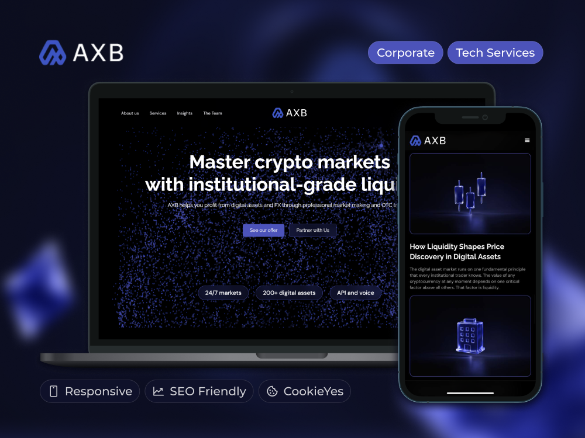
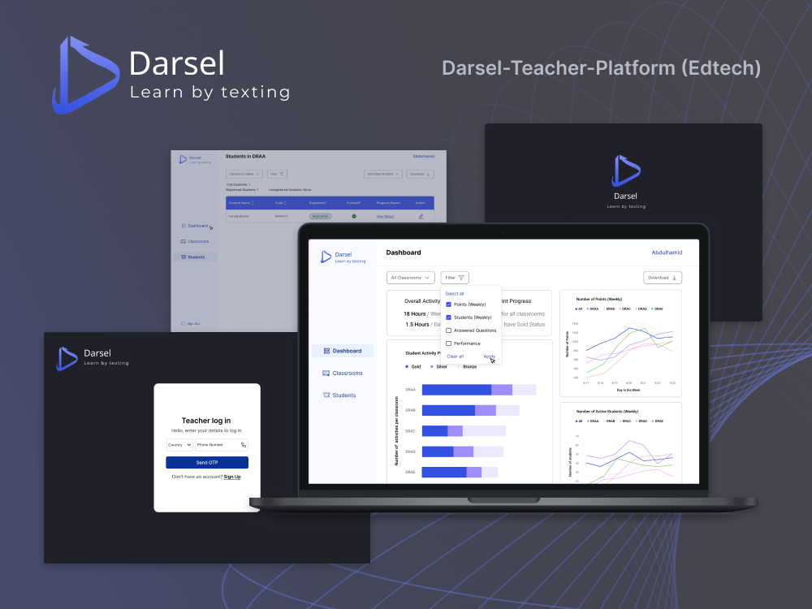

I design and build AI agents and automation systems — Claude API, OpenAI API, LangChain, n8n, Make — and take them to working products, not demos. 6+ years across venture-studio R&D, client MVPs, and three mobile apps I researched, built and released on my own.
Open to remote roles across the EU and US · Kraków, Poland · relocation considered
Explore projects by locationClick on a country to see selected work
Kraków, Poland — building since 2020
My Story
Products with business sense.
I started in finance and B2B sales, which gave me something most developers pick up late: a working understanding of how a business actually makes money. I moved into no-code development in 2021, then into R&D and technical validation at a venture studio — judging whether a startup idea was buildable, and at what cost, before anyone spent a development budget on it.
Today the centre of my work is AI agents and automation — Claude API, OpenAI API, LangChain, n8n — with no-code, JavaScript/TypeScript and SQL as the tooling around it. Alongside client work I researched, built and released three mobile apps on my own, from market research through ASO to the App Store. DevOps fundamentals are in progress.
Certifications
Modern Frontend Fundamentals with AISoftServe · 03.2026
DevOps Fundamentals for DevelopersSoftServe · in progress
Why me
The Expert Edge
Three things most job descriptions ask for separately: business context, AI systems that run in production, and delivery from first question to release.
Business Logic First
A finance degree from Jagiellonian University and two years in B2B pre-sales mean I read a brief in terms of revenue, cost and risk. At the venture studio my job was exactly that: decide whether an idea was buildable, at what cost, and whether it was worth the budget — before development started.
Agents That Run Daily
Intent classification, tool routing, retries, evaluation loops — the parts that decide whether an agent survives contact with real input. My Upwork outreach generator and Telegram voice-to-task assistant both run every day on n8n + Claude API, not as showcase prototypes.
Full-Cycle Ownership
Three mobile apps taken from market research to App Store release without a team: positioning, UX, native iOS integrations, localization into up to 35 languages, ASO, paywalls, legal pages. I own the whole path, not one ticket inside it.
Method
How I Work
The same five steps whether it's a client project, an internal team, or my own app.
Discovery
Map the product as a connected system: the problem, the users, how it makes money, what success looks like, which assumptions are still guesses.
Research & Validation
Competitors, UX patterns, technical feasibility, AI and automation options — not to copy, but to find where the gap is.
Prioritization
Cut the MVP down to what creates business value: core flow, revenue, validation. Everything else goes on the roadmap.
Build
Short iterations, user flows and data model agreed before code, continuous contact with stakeholders, priorities adjusted as new information arrives.
Measure
Business logic, flows, integrations and edge cases tested before release. After release, read real behaviour and iterate.
Career
Experience
Independent AI Automation & Product Engineer
Independent
Built an NDA-aware outreach generator on n8n + Claude API + Notion over a 28-case portfolio: it matches the 2–3 most relevant cases to a job posting and drafts the letter, cutting prep from 15–20 minutes to 10–15 seconds per application. Built a Telegram voice-to-task assistant for project managers (n8n + Groq/Whisper + Claude) that classifies intent and routes items into Jira/Notion and Google Calendar with a daily digest. Rebuilt a distributor's 2018 OpenCart site into a ~30KB filterable B2B catalogue with a self-service admin panel (Vanilla JS, htmx, Supabase, Netlify) — the client now runs the catalogue without a developer. Researched, built, localized and released three commercial mobile apps end to end; one took its first paying customers within weeks of launch, with no marketing team.
Claude API
OpenAI API
LangChain
n8n
Make
Supabase
React Native / Expo
R&D / Product Engineer
ICEO LTD.
Assessed early-stage startup ideas inside an internal venture studio before any development began: market and competitor research, teardown of competitors' stacks and architecture, required APIs and paid services, and estimates of build cost, timeline and MVP feasibility on no-code/low-code. Built the prototypes and Proofs of Concept the studio used to validate or kill ideas before committing a full budget, working alongside Product Managers, Business Analysts, Researchers and Solution Architects. Built AI-powered internal automation on the OpenAI API and shipped production landing pages and MVPs (Bubble, Webflow, n8n) across the portfolio, including the fintech product Linity after the studio wound down.
R&D / Technical Validation
PoC & Prototyping
OpenAI API
Bubble
Webflow
n8n
Software Developer
Asumma Homes
Built the core internal platform for a Finnish sustainable timber-home construction company, connecting three user roles in one workflow: company admins, supplier and partner organisations, and end clients. Designed the tender system — admins raise material and work requests, invite suppliers filtered by specialisation, and suppliers submit competing bids inside the platform. Also delivered house-model management, cost-estimate documentation, role administration and in-project messaging; designed the database schemas and integrated third-party APIs, payment flows and webhooks.
Bubble.io
Tender System
Database Design
API Integration
ConstructionTech
Freelance Product Developer
Upwork
Delivered no-code products end to end for international clients on Bubble.io, WeWeb, Webflow, Xano and Airtable — among them a visa-application workflow platform for the DACH market and a peer-to-peer vehicle rental marketplace with three user roles and Stripe payments. Owned the full lifecycle: requirements, build, deploy, post-launch optimisation, direct client contact throughout. Passed WeWeb's official certification in 2022 and moved most freelance work onto that stack.
Bubble.io
WeWeb
Xano
Airtable
Webflow
Stripe
Senior No-Code Developer
WeLoveNocode INC.
Delivered MVPs and production applications for international startups: a fintech marketplace with automated price negotiation, renewals and co-termination (team of 5, delivered in 8 weeks); an Uber-style marketplace for plumbing services matching customers to trades by location and issue type (team of 7, 3 months) that helped the client reach their next investment round; plus social and dating products. Shipped a volunteer-coordination platform for Ukraine in 3 days at the start of the full-scale invasion (Bubble.io + Twilio). Worked cross-functionally with designers and engineers on architecture and performance.
Bubble.io
Airtable
Stripe
Twilio
MVP Delivery
Lead Generator — Regional Representative, Poland
KeenEthics
Ran the full B2B funnel for the Polish market: qualified and validated marketing-qualified leads through direct outreach and first meetings, presented the delivery team to prospects, and carried deals through to signed contract and handoff. Collected initial client requirements and prepared documentation for business analysts — the first place I practised turning a business need into technical scope.
Lead Generation
B2B Sales
Pre-sales
Requirements
Own Products
Three apps, shipped solo.
Research → UX/UI → build → ASO → release, done end to end without a team. One of the three took its first paying customers within weeks of launch, with no marketing campaign behind it.
Expo / React Native
TypeScript
Family Controls
WidgetKit
Fastlane
Psalmo — Bible-first screen-time app
Pauses distracting apps through native iOS Screen Time / Family Controls until the day's verse has been read, with home- and lock-screen widgets, full Bible text (KJV/WEB), an AI prayer chat and a premium funnel. I built the Screen Time, WidgetKit and DeviceActivity integrations, localized the UI into 5 languages, automated a Fastlane screenshot pipeline (5 languages × iPhone + iPad), and wrote the marketing and legal pages.
React Native
TypeScript
RevenueCat
i18n · ~32 locales
ASO
Bubbi — baby heartbeat & pregnancy companion
Listen to, record and share baby-heartbeat audio with BPM and waveform, plus a baby diary and a week-by-week pregnancy journey. I ran the competitive research that set positioning and pricing, rebranded the app from Bumpi after a name clash in the market, localized it into ~32 locales with ASO metadata for 5 markets, and shipped RevenueCat freemium monetization.
Expo Router
Zustand
Supabase
RevenueCat
i18n · 35 locales
Face ID
Sobeer — days-clean & habit-recovery tracker
Tracks time off alcohol, nicotine or screens with streaks, money- and time-recovered calculations, a craving and mood journal, and community groups. Built local-first with Supabase-ready auth and community sync, localized into 35 languages, with Face ID gating and RevenueCat premium tiers.
Client Work
Selected Projects
AI and automation work first, then the no-code platforms and marketplaces behind it. Clients under NDA are described by sector, not by name.
n8n
Claude API
Notion API
Telegram Bot API
AI Agent
Upwork Cover Letter Generator — NDA-aware portfolio matching
A Notion portfolio of 28+ cases carries NDA and showcase rules that decide how much can be said about each project — full client name, functionality only, or nothing at all. The generator (web app + Telegram bot) reads a job posting, scores and matches the 2–3 most relevant cases by keywords and tech stack, and prompts Claude for a short letter with inline case links and a closing call to action. Prep time per application dropped from 15–20 minutes to 10–15 seconds; which clients to apply to is still decided by hand.
n8n
Claude API
Groq / Whisper
Jira API
Google Calendar
PM AI Assistant — voice-to-task via Telegram
A project manager speaks or types into Telegram; Groq/Whisper transcribes, Claude classifies the intent — new task, meeting, reminder, status change — and the workflow routes it into Jira or Notion and Google Calendar, then sends a morning digest of what's due, upcoming or overdue. Commands cover tasks by project, marking done, moving deadlines and flagging blockers. It removes the manual re-entry step between a meeting and the tracker.
Vanilla JS
htmx
Supabase
Netlify
B2B Catalogue
Zbs.lviv.ua — B2B catalogue rebuild for a pipe products distributor
A distributor trading since 1996 was running a 2018 OpenCart storefront with a cart and user accounts, while the real business is manager-led wholesale. I rebuilt the site from scratch — strategy, design, code and database: navigation cut to four sections, a categorized catalogue with parameter filters (DN, connection type) on Supabase, a short enquiry form instead of a cart, and a full admin panel for categories, products, brands, reviews and the hero slider. ~30KB transfer, and the client now runs the whole catalogue without a developer.

Webflow
Spline 3D
CMS
SEO
Fintech
AXB — corporate site for a digital-assets and FX trading firm
A market-making firm working across digital assets and foreign exchange needed a site that reads as institutional rather than crypto-native. Built in Webflow with Spline 3D scenes, custom lead-capture forms, a CMS-driven blog, a clean SEO structure and CookieYes consent handling. Live at axb.co.
Bubble.io
Airtable
Marketplace
NDA
On-demand services marketplace (under NDA)
An Uber-style platform for plumbing services: customers describe the issue, the system matches them to available trades by location and problem type, and the job is tracked through to completion. Built on Bubble.io + Airtable with a team of 7 and delivered in 3 months — the working product was part of what let the client move on to their next investment round.
Bubble.io
HubSpot
Fintech
NDA
Fintech procurement marketplace (under NDA)
Companies pick the software products they need and the platform negotiates price on their behalf, then manages renewals, add-ons and co-termination across vendors such as Asana and ClickUp. Built on Bubble.io with a HubSpot integration by a team of 5 and delivered inside an 8-week window.

WeWeb
Python
Auth0
Twilio
EdTech
Darsel — teacher platform for a non-profit
An education platform for teachers, built by a non-profit on research from Harvard and Stanford. I built the frontend in WeWeb against a Python backend with Auth0 authentication and Twilio messaging, delivered over three review iterations. Live at data.darsel.tech.
Webflow
CMS
Custom JS
SEO
HeartWiredClub — creative agency website
A multi-page Webflow site for a creative agency, with a CMS-driven portfolio and blog so the team publishes without a developer. Custom JavaScript handles the animations and interactions while keeping the pages fast on mobile, with SEO structure and CookieYes consent in place. Live at heartwiredclub.com.
Hiring for an AI agent, automation or product engineering role — or need one built? I'm based in Kraków and work remotely across the EU and US; relocation is on the table.